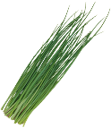

토마토 달걀 볶음
Chinese Stir-fried tomato and scrambled eggs
西紅柿炒雞蛋
조리시간30분
재료2인분 기준
토마토 2개 / 달걀 4개 /
부추 조금 / 소금, 후추
Recipe > www.10000recipe.com
pic > takestwoeggs.com

1
토마토와
부추를먹기 좋게 잘라 준비해주세요.
달걀에
소금과 후추를 조금 넣고 잘 풀어주세요.
3 팬에 기름을 살짝 두르고, 풀어놓은 달걀을 부어 휘저으며 익혀주세요!
4
익힌 달걀은 잠시 빼 두고,
소량의 기름을 두르고 토마토를 볶아주세요!
토마토가 익기 시작하면 익힌 달걀, 부추를 넣고
20초 정도 더 볶아주면 완성!

About vegetables
the facts about vegetables that we didn't know-!!!
20232504 서예린
yerino9o9seo@gmail.com